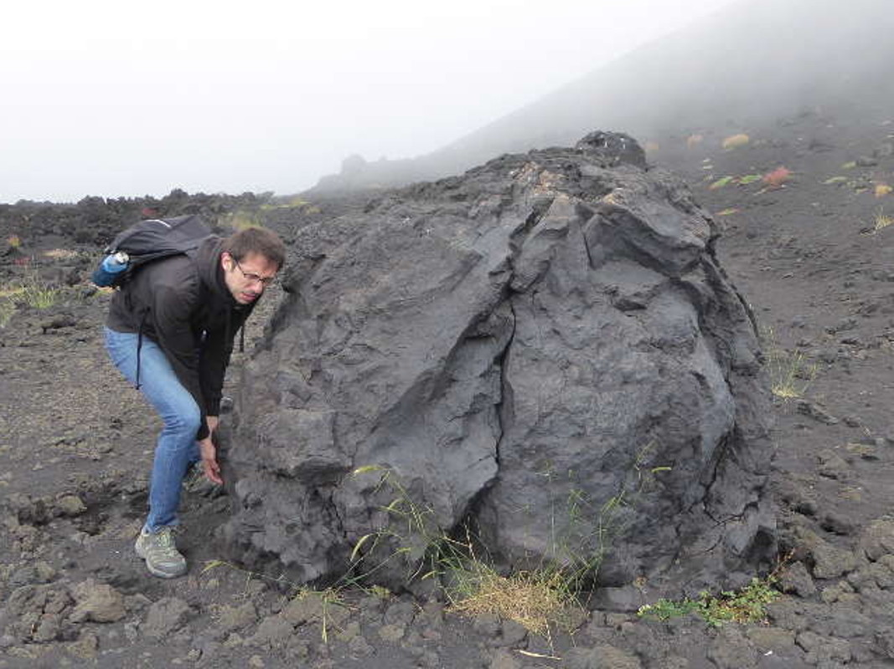

Aurélie & Romain

27 juillet 2019
Bienvenue sur le site de notre mariage !
Vous trouverez ici des informations pour vous aider à organiser votre venue et partager avec nous ce jour - on l'espère - inoubliable.
On vous embrasse tous bien fort.
A très bientôt,
Aurélie et Romain
Aurélie

L'aventurière du couple, Aurélie adore faire des rencontre insolites, que ce soit au milieu de la mangrove Thaïlandaise (rend moi mon appareil photo !), en haut des falaises de Moher (j'ai le vertige, je veux partir d'ici...) ou dans son appartement Londonien (une araignéeeeeee !!!!!).
Sa plus belle rencontre insolite arriva il y a quelques années, quand elle tomba sous le charme de ce talentueux danseur, grand, beau, ténébreux (qu'est-ce qu'il ne faut pas dire pour lui faire plaisir) et surtout très drôle.
Après quelques mois rock'n'roll, les amoureux se lancent dans leur propre danse à deux, et d'aventure en aventure, arrivent à Londres pour faire d'autres rencontres encore plus insolites: les scones, le criquet et les écureuils.
Aurélie ne sait pas rester en place plus de quelques mois; 'et si on changeait d'appart ?', 'et si on partait en vacances à Istanbul ?', 'et si je quittais l'académie ?', 'ça te dit de tout quitter et de partir en Australie, au Canada, à Barcelone, en Suisse ?', 'et si on faisait le tour du monde en un an?', 'je vais me mettre au crochet, ça serait super que je sache faire quelque chose de créatif'.
C'est en voyant l'attitude réconfortante et encourageante de Romain à chaque nouvelle idée, et en ignorant volontairement ses yeux apeurés, qu'Aurélie sû qu'elle ne pouvait plus se passer de lui. Alors, elle n'hésita pas à dire oui, en cette soirée romantique du 14 Octobre 2018, à Vienne...
L'aventurière du couple, Aurélie adore faire des rencontre insolites, que ce soit au milieu de la mangrove Thaïlandaise (rend moi mon appareil photo !), en haut des falaises de Moher (j'ai le vertige, je veux partir d'ici...) ou dans son appartement Londonien (une araignéeeeeee !!!!!).
Sa plus belle rencontre insolite arriva il y a quelques années, quand elle tomba sous le charme de ce talentueux danseur, grand, beau, ténébreux (qu'est-ce qu'il ne faut pas dire pour lui faire plaisir) et surtout très drôle. Après quelques mois rock'n'roll, les amoureux se lancent dans leur propre danse à deux, et d'aventure en aventure, arrivent à Londres pour faire d'autres rencontres encore plus insolites: les scones, le criquet et les écureuils.
Aurélie ne sait pas rester en place plus de quelques mois; 'et si on changeait d'appart ?', 'et si on partait en vacances à Istanbul ?', 'et si je quittais l'académie ?', 'ça te dit de tout quitter et de partir en Australie, au Canada, à Barcelone, en Suisse ?', 'et si on faisait le tour du monde en un an?', 'je vais me mettre au crochet, ça serait super que je sache faire quelque chose de créatif'.
C'est en voyant l'attitude réconfortante et encourageante de Romain à chaque nouvelle idée, et en ignorant volontairement ses yeux apeurés, qu'Aurélie sû qu'elle ne pouvait plus se passer de lui. Alors, elle n'hésita pas à dire oui, en cette soirée romantique du 14 Octobre 2018, à Vienne...
Romain

Prêt à soulever des montagnes (dans ce cas précis, un bout de volcan) pour faire plaisir à sa fiancée, Romain a vécu des aventures
inoubliables ces cinq dernières années auprès de sa dulcinée.
Il a quitté la France, pays du soleil, des coeurs de canards, du pâté de papa, et des tripoux, pour vivre
dans un environnement hostile, entouré de pintes de bière, ravagé par la pluie en continue et déprimé par le manque de vitamine D.
Malgré toutes ces difficultés, il a réussit à s'adapter à la vie Londonienne et peut maintenant boire deux pintes de Guinness dans la même soirée
sans être trop atteint (la troisième reste un véritable challenge…). Il a maintenant pris goût à l'aventure et n'hésite pas à découvrir de nouvelles contrées (le centre de Londres), des saveurs locales (le cheddar anglais), et à parler une langue étrangère tout en gardant son accent du sud (ce n'est pas donné à tout le monde!).
Après avoir vécu tous ces moments de bonheurs et d'escapades insolites, Romain a su rapidement qu'il ne pouvait plus vivre sans entendre le rire d'Aurélie, sans la regarder tous les jours que Dieu fait, et sans la tenir contre lui. Ainsi, le 14 octobre 2018, il se jette à l'eau et organise un weekend en amoureux à Vienne pour faire sa demande...
Prêt à soulever des montagnes (dans ce cas précis, un bout de volcan) pour faire plaisir à sa fiancée, Romain a vécu des aventures inoubliables ces cinq dernières années auprès de sa dulcinée.
Il a quitté la France, pays du soleil, des coeurs de canards, du pâté de papa, et des tripoux, pour vivre dans un environnement hostile, entouré de pintes de bière, ravagé par la pluie en continue et déprimé par le manque de vitamine D.
Malgré toutes ces difficultés, il a réussit à s'adapter à la vie Londonienne et peut maintenant boire deux pintes de Guinness dans la même soirée sans être trop atteint (la troisième reste un véritable challenge…). Il a maintenant pris goût à l'aventure et n'hésite pas à découvrir de nouvelles contrées (le centre de Londres), des saveurs locales (le cheddar anglais), et à parler une langue étrangère tout en gardant son accent du sud (ce n'est pas donné à tout le monde!).
Après avoir vécu tous ces moments de bonheurs et d'escapades insolites, Romain a su rapidement qu'il ne pouvait plus vivre sans entendre le rire d'Aurélie, sans la regarder tous les jours que Dieu fait, et sans la tenir contre lui. Ainsi, le 14 octobre 2018, il se jette à l'eau et organise un weekend en amoureux à Vienne pour faire sa demande...
Programme
- Mairie de Niort, 1 Place Martin Bastard, 79000 Niort, France
- 27 juillet 2019, début d'après-midi, heure à confirmer
La cérémonie civile se déroulera à la mairie de Niort suivie d'une courte séance photo devant la mairie, les Halles et le Donjon de Niort.
- Domaine de la Gravette, 79360 Beauvoir-sur-Niort, France
- 27 juillet 2019, milieu d'après-midi, heure à confirmer
Une cérémonie laïque se déroulera au domaine de La Gravette suivie du vin d'honneur, du dîner et de la soirée sur le dancefloor!
- Domaine de la Gravette, 79360 Beauvoir-sur-Niort, France
- 28 juillet 2019, 13h00
Un brunch se déroulera le dimanche au domaine de la Gravette pour se remettre de nos émotions...
Notre histoire
-
Nos débuts
15 Mars 2013La rencontre...
-
Emménagement
5 Décembre 2013Nos premiers pas de vie à deux.
-
Départ pour notre vie en Angleterre
5 Octobre 2014Le départ chez nos voisins anglais. De nouvelles carrières professionnelles se dessinent.
-
Demande en mariage
14 Octobre 2017Lors d'un week-end d'exception à Vienne, elle dit "oui".
-
Arrivée d'Alice
17 Décembre 2018Après un accouchement riche en emotion, notre famille s'agrandit avec l'arrivée d'Alice.
Nos témoins
Charlotte Fieno
Témoin de la mariée
Oriane Escobar
Témoin de la mariée
Jérémie Pardou
Témoin du marié
Guillaume Truilhé
Témoin du marié
Les demoiselles d'honneur
Pauline Millet-Peyrat
Soeur de la mariée
Emeline Aupy
Soeur de la mariée
Chloé Nunez
Amie de la mariée
Virginie Travisan
Amie du marié
 Coralie Truilhé
Coralie Truilhé
Amie du marié
 Alice Garrigues
Alice Garrigues
Fille des mariés
Témoin de la mariée
Témoin de la mariée
Témoin du marié
Témoin du marié
Soeur de la mariée
Soeur de la mariée
Amie de la mariée
Amie du marié
Amie du marié
Fille des mariés
Transports
Les aéroports autours de Niort:
- La Rochelle - Île de Ré
- Paris Charles de Gaulle
- Paris Orly
- Poitiers Biard
- Bordeaux - Mérignac
De La Rochelle: Prendre un train direct de La Rochelle à Niort (environ 40 min)
De Paris: Prendre un train direct de Gare Montparnasse Paris à Niort (environ 2h)
De Poitiers: Prendre un train direct de Poitiers à Niort (environ 50 min)
De Bordeaux: Prendre un train de Bordeaux à Niort (environ 2h40) - un changement obligatoire à Poitiers
En location, de La Rochelle: Rentalcars.com
A côté de la gare: Europcar, Hertz, Sixt
A côté de l'aéroport: Europcar, Hertz, Sixt,
De Niort: Rentalcars.com Europcar
Suggestion d'hébergements
Gîtes
Airbnb
- Chambres à la campagne (4 disponibles) avec lit 2P
- Maison à la campagne
- La Cabane de Vendredi avec terrasse sur pilotis
- Gite les frênes, entre terre et mer
- Close house Niort swamp poitevin+piscine sud79
- Grande chambre (42m²) au vert
- Chambre tres calme
- Gîte proche de La Rochelle et du Marais Poitevin
- Maison de campagne et pizzeria au calme
- La ferme de Contremarche
- Chambre 1 ..... salle d eau à l italienne
- Chambre 2 ...
- Calme champêtre
Aux alentours
La Rochelle
(voiture: 50 min de Niort)La ville de naissance d'Aurélie, le port avec ses deux tours reste incontournables et ces petites rues marchandes sont pleines de charme. Passez-y au moins un après-midi à flâner dans les rues. Faites un détour par le meilleur glacier de tous les temps, Ernest le glacier !
Île de Ré
(voiture: 1h10 de Niort)Si vous avez prévu de passer quelques jours dans la région, passez une nuit ou deux dans l'Île de Ré peut vous dépayser. Avec ses plages, ses petits villages, ses marchés bucoliques et les balades à vélo légendaires, l'Île de Ré est une destination unique pour passer un bon moment entre amis ou en famille.
Puy du Fou
(voiture: 1h20 de Niort)Élu meilleur parc du monde, le Puy du Fou est à ne pas manquer. Faites le détour pour y passer un ou deux jours et pourquoi pas rester dans leurs hôtels exceptionnels. La Cinéscénie du soir peut être prise en même temps que le parc, mais il faut réserver longtemps à l'avance; c'est un des plus beaux spectacles que vous verrez dans votre vie, inoubliable !
Futuroscope
(voiture: 1h de Niort)Des attractions à couper le souffle, un parc agréable pour les petits et grands, le Futuroscope est unique en son genre. Le parc se renouvelle sans cesse pour impressionner les visiteurs avec les dernières technologies. Il vaut le détour ! N'oubliez pas de rester le soir pour le spectacle de son et lumière (inclus dans le prix du billet).
Le marais poitevin
(voiture: 1h de Niort)Pour passer un moment agréable entre amis ou en famille, loin des villes, le marais poitevin est un endroit idéal. Prenez une excursion en canoë, allez vous baigner dans un lac, ou faites des balades à vélo ou encore des visites de châteaux médiévaux. Il y en a pour tous les goûts !
Poitiers
(voiture:1h de Niort)Pour les amoureux de la ville, vous pouvez faire une halte au centre historique de Poitiers, le chef lieu de la région Poitou-Charentes. Séjournez dans cette ville et découvrez les produits régionaux, comme les terrines et pâtés ou encore les bières locales.
Zoo de la Palmyre
(voiture: 1h30 min de Niort)Pour passer une journée insolite en famille, allez visiter le Zoo de la Palmyre. Ne manquez pas le spectacle des otaries ainsi que les perroquets en trottinette. Vous ne verrez pas ça deux fois dans votre vie !